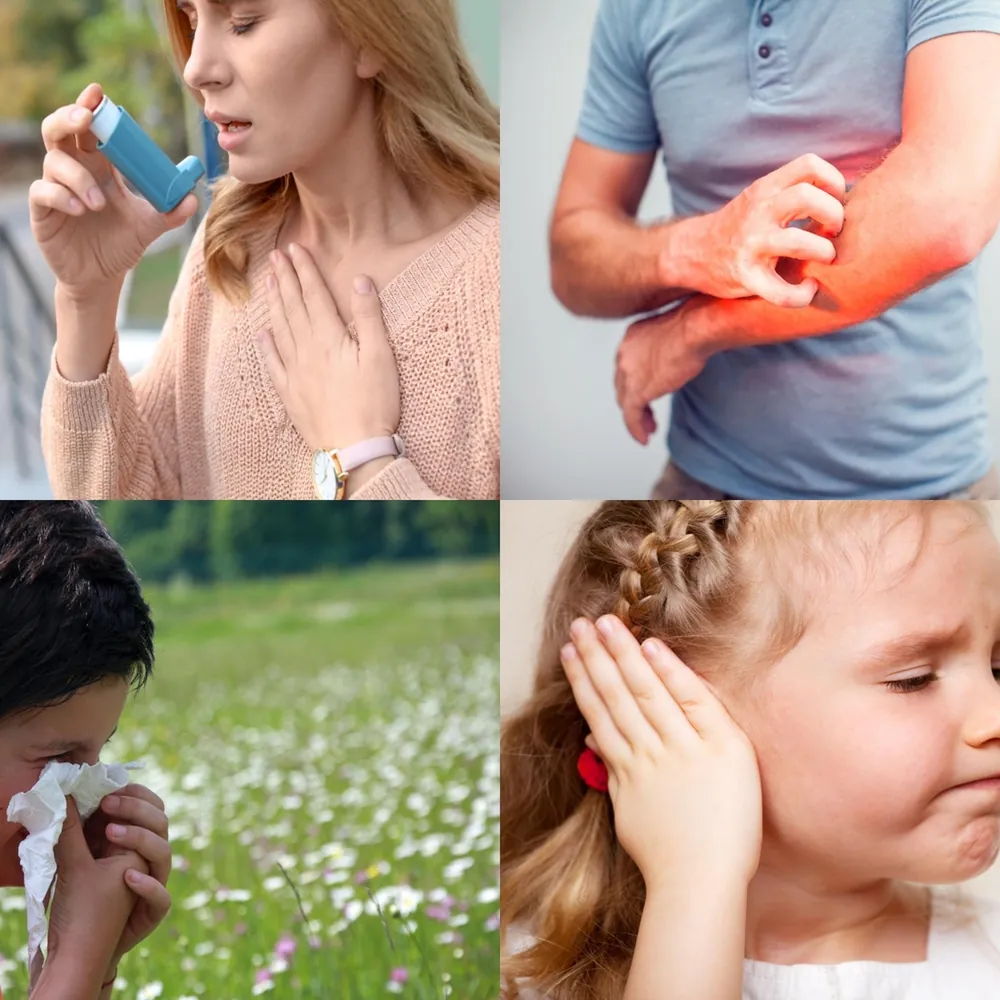
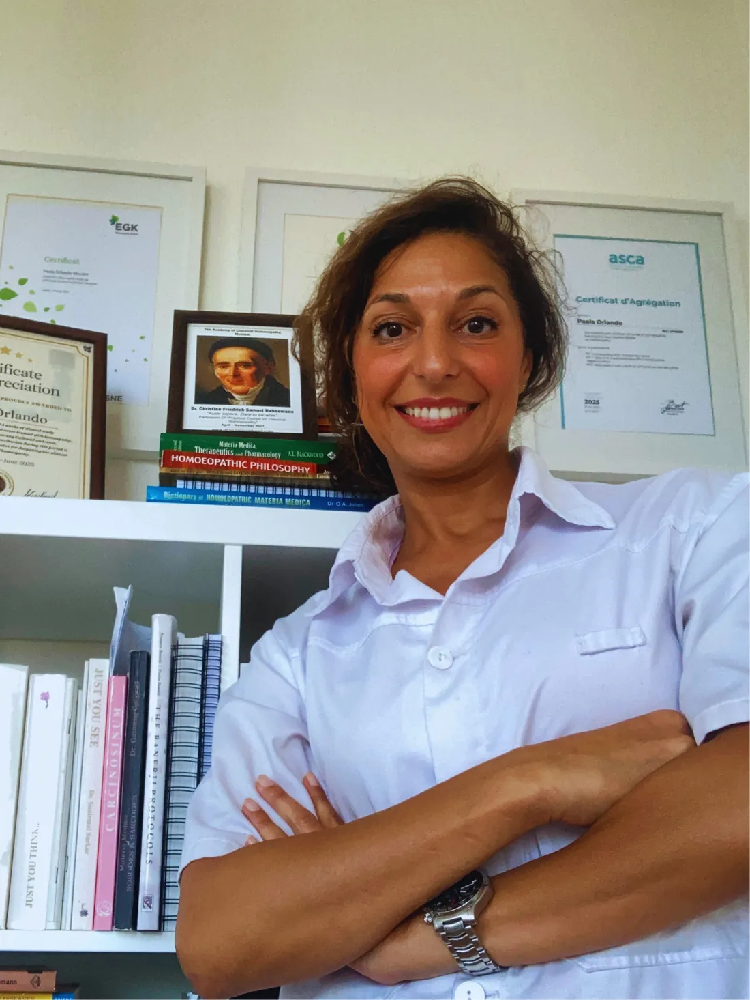
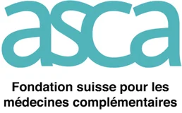
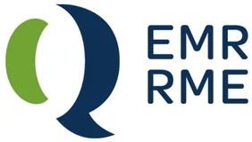
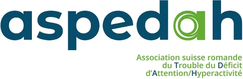

Bébé, enfant & adolescent
Otites à répétition, sommeil, digestion, eczéma, dentition, comportement, acné et troubles hormonaux de l’ado.
Voir la pageOtites à répétition, sommeil, digestion, eczéma, dentition, comportement, acné et troubles hormonaux de l’ado.
Voir la page Toutes les étapes de la vie hormonale
Toutes les étapes de la vie hormonale
Cycles douloureux, SOPK, endométriose, fertilité, grossesse, post-partum, ménopause, thyroïde.
Voir la pageCe que j’accompagne
Services liés

Chez l’enfant et l’adulteEczéma, psoriasis, urticaire, rhume des foins, asthme, otites, sinusites.
Voir la pageCe que j’accompagne
Services liés
 En complément de l’équipe médicale
En complément de l’équipe médicale
Pendant et après les traitements contre le cancer, pour mieux traverser les effets secondaires.
Voir la page Enfant, parents & famille
Enfant, parents & famille
Un accompagnement en trois volets : l’enfant, les parents et toute la famille.
Voir la page Thérapie comportementale et cognitive de l’insomnie
Thérapie comportementale et cognitive de l’insomnie
Endormissement difficile, réveils nocturnes : retrouver des nuits réparatrices durablement.
Voir la pageCe que j’accompagne
Services liés
 Soutien aux mamans et aux tout-petits
Soutien aux mamans et aux tout-petits
Soutenir les mamans dans l’allaitement et accompagner le sommeil du tout-petit.
Voir la pageCe que j’accompagne
Services liés
 Chronique, neurologique, urgences
Chronique, neurologique, urgences
Fatigue et stress chroniques, troubles digestifs, migraines, vertiges, urgences homéopathiques.
Voir la pageUne homéopathie classique, précise et structurée pour l’enfant, la femme et l’adulte — toujours en complément de votre suivi médical.

Otites à répétition, sommeil, digestion, eczéma, dentition, comportement, acné et troubles hormonaux de l’ado.
Voir la pageCycles douloureux, SOPK, endométriose, fertilité, grossesse, post-partum, ménopause, thyroïde.
Eczéma, psoriasis, urticaire, rhume des foins, asthme, otites, sinusites.
Pendant et après les traitements contre le cancer, pour mieux traverser les effets secondaires.
Voir la pageUn accompagnement en trois volets : l’enfant, les parents et toute la famille.
Voir la pageEndormissement difficile, réveils nocturnes : retrouver des nuits réparatrices durablement.
Voir la pageSoutenir les mamans dans l’allaitement et accompagner le sommeil du tout-petit.
Voir la pageFatigue et stress chroniques, troubles digestifs, migraines, vertiges, urgences homéopathiques.
Voir la pageAucun service pour ce profil.
Sur OneDoc, 24h/24, ou par téléphone. Je choisis Pully ou Fribourg, au cabinet ou en visio.
Nous prenons le temps de comprendre votre histoire, vos symptômes et votre terrain.
Un traitement individualisé, puis un suivi toutes les 4 à 6 semaines. Remboursé par la plupart des complémentaires.
Madame Paola Orlando, homéopathe, me suit depuis plusieurs années. Au mois de février de cette année 2025, on m’a diagnostiqué un cancer du sein. Madame Orlando a dressé un protocole précis et essentiel ciblé sur mon cancer.
Au fur et à mesure que j’avance dans un traitement chimiothérapeutique, elle réadapte mon protocole afin que les médicaments qu’elle me prescrit correspondent à l’état sans cesse en mouvement de mon corps physique mais aussi de mon état psychique. Sur ce parcours, Madame Orlando ne m’a jamais dissuadée de suivre le protocole allopathique classique ; au contraire, elle m’y a encouragée et continue de le faire. Aujourd’hui je tiens vraiment et de tout mon cœur à remercier Madame Orlando de son professionnalisme, de ses formidables compétences, mais aussi de sa disponibilité, de sa générosité d’écoute, de son attention profonde et sincère. Elle est passionnée par son métier.
Arrivée chez Madame Orlando tout par hasard et on dit : le hasard fait bien les choses. Je ne peux que confirmer cela. J’ai été curieuse de voir ce que l’homéopathie pourrait apporter à notre fille de 7 ans. Madame Orlando s’est montrée très à l’écoute, toujours disponible et très professionnelle.
On connaît tous l’arnica ;-), mais l’homéopathie est bien plus complexe que cela, surtout personnalisée pour chacun d’entre nous et EFFICACE ! Enfin, une adresse que je vais précieusement garder. Merci Madame Orlando d’être d’une bienveillance rare et de vos conseils !
Paola est une femme bienveillante, à l’écoute, passionnée et investie. Très à l’aise avec les enfants, elle permet un complément parfait au suivi pédiatrique. Très disponible et prenant son travail très à cœur, je ne peux que la recommander !
Paola Orlando me suit depuis 1 an et demi maintenant et je vois une nette amélioration sur mes angoisses et mon stress, qui étaient très présents. Elle est très à l’écoute et prend son rôle à cœur. Elle trouve le traitement parfait pour chaque besoin. Je la recommande vivement.
Mme Orlando a pris en charge la santé de mon bébé, un grand prématuré né à 29 semaines, avec beaucoup de bienveillance, d’écoute et de sérieux. Elle a su le guérir de maux de ventre, dont il souffrait depuis la naissance. Aussi, je vous recommande sincèrement cette homéopathe solaire et intelligente.
J’ai eu la grande chance d’être suivie par Mme Orlando Paola avant de devoir débuter une chimiothérapie.
Cet accompagnement (sur la base d’une anamnèse complète et détaillée de votre parcours de santé et votre vécu) a fait pour moi toute la différence et m’a permis de traverser cette étape sans les effets secondaires connus tels les nausées/vomissements, paresthésies etc… de ce traitement lourd. Ça a été pour moi un accompagnement important et efficace que je conseille vivement ! Et dès le premier moment, vous savez que vous avez affaire à quelqu’un d’extrêmement professionnelle, consciencieuse et humaine.
Une praticienne exceptionnelle, à l’écoute et bienveillante. Elle prend vraiment le temps de comprendre, sans jugement, avec une grande humanité. Ses conseils m’ont énormément aidée à retrouver un équilibre dans ma santé de femme. Je la recommande du fond du cœur. Merci à vous Paola !!!
J’ai beaucoup apprécié la grande écoute de Paola, et son empathie. Elle cherche tous les détails auxquels on ne penserait pas dans une approche globale du problème, qui s’est avéré dans mon cas très utile et bénéfique. Mille mercis Paola, je vais vraiment mieux.
Paola est vraiment professionnelle. Elle a écouté attentivement mes besoins et a abordé mon problème dans sa globalité, en examinant tous les détails de ma vie, ce qui m’a aidée à trouver la solution la plus adaptée à mes besoins. Merci beaucoup, Paola.
Pour lever les doutes avant le premier rendez-vous.
Toutes les questionsOui, par la plupart des assurances complémentaires. Je suis reconnue ASCA, RME, Visana et EGK.
Non. L’homéopathie est complémentaire et n’interfère pas avec vos médicaments.
Oui, dès la naissance, y compris pour les prématurés.
75 à 90 minutes pour la première, puis 30 à 60 minutes pour les suivis.
Reconnue par les assurances complémentaires · Membre & formée auprès de





La première consultation permet de poser les bases d’un suivi structuré et individualisé. Je vous reçois à Pully/Lausanne et tous les jeudis à Fribourg.
Prise de rendez-vous en ligne 24h/24, par téléphone ou par e-mail. Si je suis en consultation, laissez un message : je vous rappelle dès que possible.
Lun – Jeu : 8h – 18h
Vendredi : 8h – 13h
Sur rendez-vous uniquement